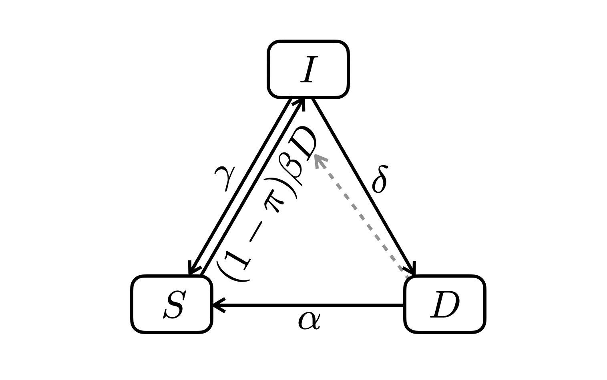

library(tibble)
library(purrr)
library(dplyr)
library(magrittr)TPT model
All the data and source code files are here.
You can ask report errors or for additional analysis here.
1 Introduction
2 Packages
Required: deSolve, tibble, purrr
3 Utilitary functions
ode2 <- function(...) tibble::as_tibble(as.data.frame(deSolve::ode(...)))seq2 <- function(...) seq(..., le = 512)plotl <- function(...) plot(..., type = "l", lwd = 2)lines2 <- function(...) lines(..., lwd = 2)legend2 <- function(...) legend(..., bty = "n")4 Epidemiological models
4.1 \(SID\) model
The simplest model we could imagine is a model with only 3 variables: those not infected, those infected but not infectious, and those infected, sick and infectious. This model contains human demography but the total population size is kept constant (i.e. birth and death rates are equal). It also contains:
- clearance from infected, from natural immunity of through prophylactic treatment
- recovery from disease, with and without clearance, from natural immunity or through curative treatment
- possibility of relapse (following recovery without clearance)
- mortality from disease

4.1.1 Variables
- \(S\): non-infected
- \(I\): infected (and not infectious)
- \(D\): sick and infectious
Note that \(S + I + D = N\) where \(N\) is a constant.
4.1.2 Parameters
- \(\beta\): infectious contact rate (/ind)
- \(\delta\): progression rate of infection to disease
- \(\sigma\): clearance rate of infected through natural immunity
- \(\pi\): clearance rate of infected through prophylactic treatment
- \(\gamma\): rate of disease recovery from natural immunity
- \(p\): probability that disease recovery from natural immunity comes with clearance
- \(\tau\): rate of disease recovery from curative treatment
- \(q\): probability that disease recovery from curative treatment comes with clearance
- \(\alpha\): death rate due to disease
- \(\mu\): natural birth and death rates
4.1.3 Dynamics
Differential equations
\[ \begin{align} \frac{dS}{dt} &= (\sigma + \mu + \tau) I + (p \gamma + q \tau + \alpha + \mu) D - \beta D S \\ \frac{dI}{dt} &= \beta D S + ([1 - p] \gamma + [1 - q] \tau) D - (\delta + \sigma + \mu + \tau) I \\ \frac{dD}{dt} &= \delta I - (\gamma + \tau + \alpha + \mu) D \end{align} \]
R code:
sid <- function(
S0, I0, D0, beta, delta, sigma, pi, gamma, p, tau, q, alpha, mu, times) {
N <- S0 + I0 + D0
ode2(c(S = S0, I = I0, D = D0),
times,
function(time, state, pars) {
with(as.list(c(state, pars)), {
foi <- beta * D * S
dS <- (sigma + mu + tau) * I + (p * gamma + q * tau + alpha + mu) * D - foi
dI <- foi + ((1 - p) * gamma + (1 - q) * tau) * D -
(delta + sigma + mu + tau) * I
dD <- delta * I - (gamma + tau + alpha + mu) * D
list(c(dS, dI, dD))
})
},
c(beta = beta, delta = delta, sigma = sigma, pi = pi, gamma = gamma, p = p,
tau = tau, q = q, alpha = alpha, mu = mu))
}Let’s run an example:
delta <- .01
sid_sim <- sid(S0 = 1e5 - 350,
I0 = 0,
D0 = 350,
beta = .00001,
delta = delta,
sigma = 0,
pi = 0,
gamma = 0,
p = .1,
tau = 0,
q = .1,
alpha = 1 / 3,
mu = 1 / 70,
times = seq2(0, 10000))
opar <- par(mfrow = c(1, 3))
with(sid_sim, {
plotl(time, I, col = 2, xlab = "time (year)", ylab = "infection prevalence")
plotl(time, D, col = 3, xlab = "time (year)", ylab = "disease prevalence")
plotl(time, delta * I, col = 4, xlab = "time (year)", ylab = "yearly disease incidence")
})
par(opar)4.2 Calibration
- infection prevalence: somewhere between 10 and 30% of the population
- disease prevalence: somewhere between 50 and 500 / 100,000
- disease incidence: close to disease prevalence
A function that looks for the endemic equilibrium:
equilibrium <- function(f, args, p = .1, eps = 1e-2) {
sims <- do.call(f, args)
nr <- nrow(sims)
from <- nr - round(p * nr)
final <- sims[(nr - round(p * nr)) : nr, -1]
final_val <- tail(final, 1)
while (max(map_dbl(final, ~ max(abs(diff(.x))))) > eps) {
final_val <- tail(final, 1)
args[paste0(names(final_val), "0")] <- final_val
sims <- do.call(f, args)
final <- sims[from : nr, -1]
}
unlist(final_val)
}Let’s try it:
args <- list(S0 = 1e5 - 350,
I0 = 0,
D0 = 350,
beta = .00001,
delta = .01,
sigma = 0,
pi = 0,
gamma = 0,
p = .1,
tau = 0,
q = .1,
alpha = 1 / 3,
mu = 1 / 70,
times = seq2(0, 10000))
out <- equilibrium(sid, args)
# per 100,000:
c(out, yearly_disease_incidence = args$delta * unname(out["I"])) S I D
84421.7687 15142.6216 435.6097
yearly_disease_incidence
151.4262 ABC:
abc <- function(f, args, icdnc, target, n = 100, p = .1, eps = 1e-2) {
idx <- which(map_int(args, length) == 2)
get_eq <- function(x) {
args[idx] <- x
out <- equilibrium(f, args)[-1]
c(out, icdnc(out, args))
}
vls <- args[idx] %>%
map_df(~ runif(n, .x[1], .x[2])) %>%
t() %>%
as.data.frame()
vls %>%
map(get_eq) %>%
map_lgl(~ all(.x > map(target, first) & .x < map(target, last))) %>%
extract(vls, .) %>%
t() %>%
as_tibble()
}Let’s try it:
args <- list(S0 = 1e5 - 350,
I0 = 0,
D0 = 350,
beta = c(.000005, .000015),
delta = c(.005, .015),
sigma = 0,
pi = 0,
gamma = 0,
p = .1,
tau = 0,
q = .1,
alpha = 1 / 3,
mu = 1 / 70,
times = seq2(0, 10000))
out <- abc(sid, args, function(x, y) y$delta * x["I"],
list(c(5000, 35000), c(50, 500), c(50, 500)), 1000)
with(out, plot(beta, delta))